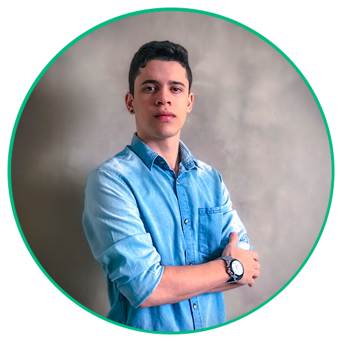

Instituições de ensino
- Labenu
- Faculdade Provome
Experiencia profissional
Empreendedorismo Start
Como designer da Empreendedorismo Start, atuei na criação de identidades visuais para lançamentos de cursos on-line de influencers renomados, como o Instituto Transformando Faces e a Pastora Helena Tannure. Produzia criativos para anúncios, e peças visuais para grupos de leads de Whatsapp. Também fazia atendimento aos leads, realizando vendas dentro e fora de época de lançamentos. Nesse estágio aprendi os principais processos para um lançamento de marketing digital, são esses: Captura, aquecimento de leads (copy), abertura de carrinho e resgate (vendas pós lançamento).Azougue Grelhados
Atuava nas vendas diretas com o cliente final, bem como na gestão da equipe. Além disso, era responsável pelo controle de estoque, financeiro e relatórios.Paris 6 Bistrô
Trabalhava no setor de vendas e atendimento direto ao cliente. Fui premiado em diversas ocasiões por bater metas e ótimos resultados na experiência dos clientes.Competências e Habilidades
- Trabalho em equipe - Devido a experiência obtida nos projetos e trabalhos que já participei, pude desenvolver esta habilidade.
- Comunicação - Por ter sido garçom e atender diretamente o cliente final realizando vendas, pude desenvolver esta skill.
- Espírito colaborativo - Após ter enfrentado diversos desafios em projetos escolares e profissionais, percebi que quando algo é feito em conjunto, os resultados podem ser mais proveitosos, e eu gosto muito de aproveitar quando tenho esta oportunidade.
- JavaScript - Conhecimento técnico adquirido no curso Web Full Stack Labenu, envolvendo algoritmos e lógica de programação.
- HTML e CSS - Competência em desenvolvimento.
- Design com Adobe Photoshop - Como autodidata, pude aprender ferramentas de design como Photoshop e Illustrator e exercer profissionalmente esta atividade.